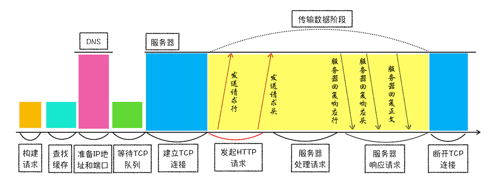
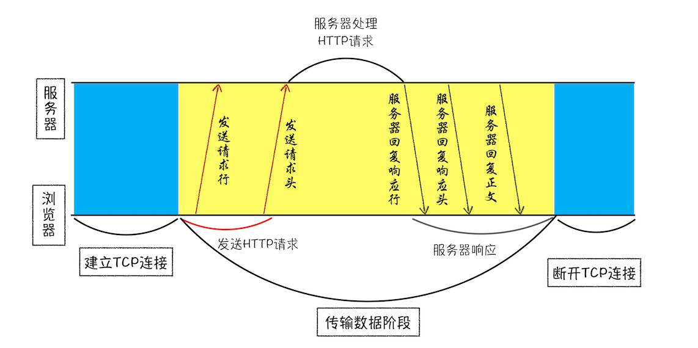
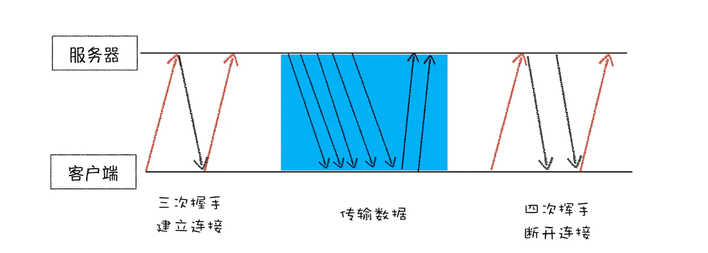
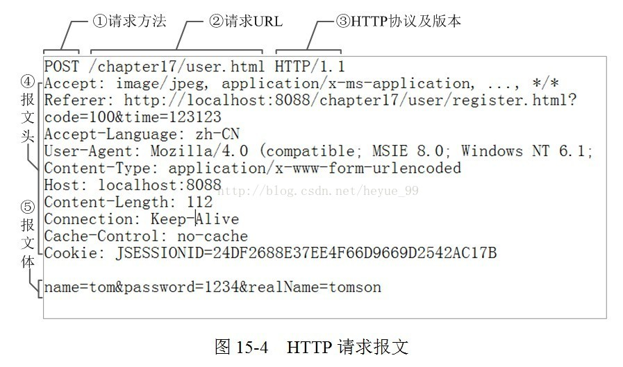
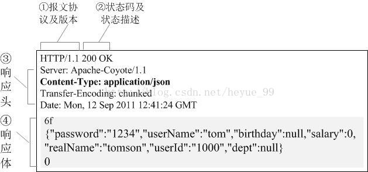
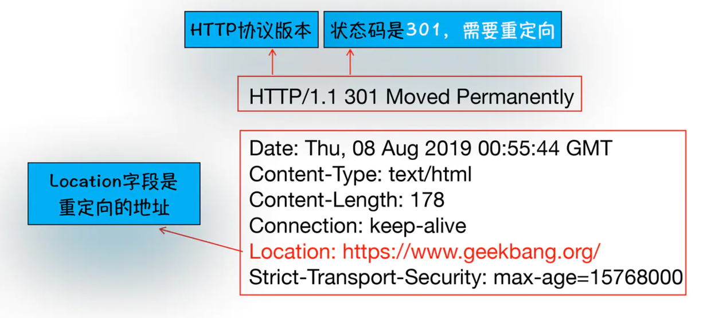
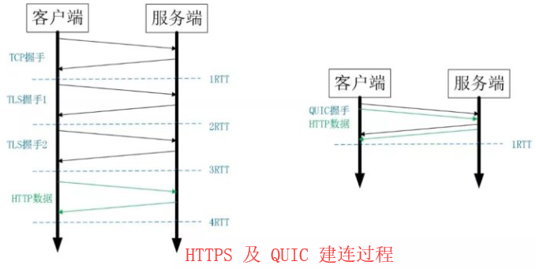
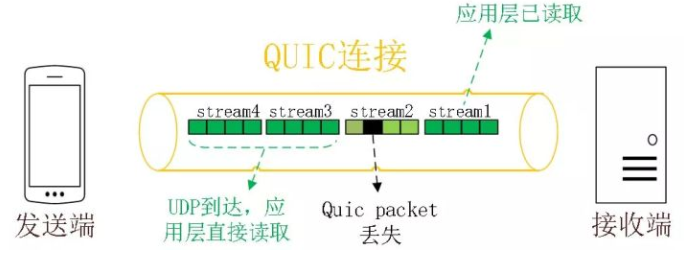
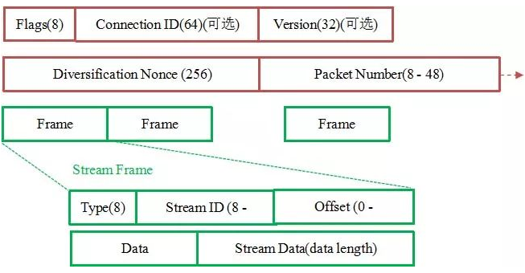

讲解HTTP请求，从输入url到页面呈现的过程.
HTTP 请求
浏览器中的 HTTP 请求流程

浏览器中的 HTTP 请求从发起到结束一共经历：
- 构建请求
- 查找缓存
- 准备 IP 和端口
- 等待 TCP 队列
- 建立 TCP 连接
- 发起 HTTP 请求
- 服务器处理请求
- 服务器返回请求和断开连接
浏览器端发起 HTTP 请求流程
构建请求
首先，浏览器构建请求行信息（如下所示），构建好后，浏览器准备发起网络请求。
GET /index.html HTTP1.1
查找缓存
在真正发起网络请求之前，浏览器会先在浏览器缓存中查询是否有要请求的文件。其中，浏览器缓存是一种在本地保存资源副本，以供下次请求时直接使用的技术。
当浏览器发现请求的资源已经在浏览器缓存中存有副本，它会拦截请求，返回该资源的副本，并直接结束请求，而不会再去源服务器重新下载。这样做的好处：
- 缓解服务器端压力，提升性能（获取资源的耗时更短了）；
- 对于网站来说，缓存是实现快速资源加载的重要组成部分。
如果缓存查找失败，就会进入网络请求过程了
准备 IP 地址和端口
HTTP 和 TCP 的关系：浏览器使用 HTTP 协议作为应用层协议，用来封装请求的文本信息；并使用 TCP/IP 作传输层协议将它发到网络上，所以在 HTTP 工作开始之前，浏览器需要通过 TCP 与服务器建立连接。也就是说 HTTP 的内容是通过 TCP 的传输数据阶段来实现的。

建立 TCP 连接的第一步就是需要准备 IP 地址和端口号。
域名系统（DNS）：域名和 IP 地址做一一映射关系。
IP地址：第一步浏览器会请求 DNS 返回域名对应的 IP。当然浏览器还提供了 DNS 数据缓存服务，如果某个域名已经解析过了，那么浏览器会缓存解析的结果，以供下次查询时直接使用，这样也会减少一次网络请求。
端口号：通常情况下，如果 URL 没有特别指明端口号，那么 HTTP 协议默认是 80 端口。
阮一峰的DNS 原理入门
等待 TCP 队列
Chrome 有个机制，同一个域名同时最多只能建立 6 个 TCP 连接，如果在同一个域名下同时有 10 个请求发生，那么其中 4 个请求会进入排队等待状态，直至进行中的请求完成。 如果当前请求数量少于 6，会直接进入下一步，建立 TCP 连接。
有很多图片资源或者其他支援请求怎么办？
一. 浏览器有连接请求限制，一般浏览器都是最大http连接数被限制在6个，有以下解决方法
1. 懒加载，没有浏览到的图片暂不请求
2. 小图片比较多，可以用雪碧图、字体图标、base64等，这样可以有效减少连接数
3. 连接数限制问题还可以由http2来解决，http2一个站点只有一个连接。每个请求为一个流，每个请求被分为多个二进制帧，不同流中的帧可以交错的发送，实现多路复用。这就解决了连接数限制的问题
二、图片过大，传输和渲染比较慢，有以下的处理办法
1. 如果是相册之类的可以预加载，在展示当前图片的时候，就加载它的前一个和后一个图片
2. 加载的时候可以先加载一个压缩率非常高的缩略图，以提高用户体验
3. 使用渐进式jpeg，会提高用户体验
4. 如果展示区域小于图片的真实大小，可以在服务端先压缩到合适的尺寸
建立 TCP 连接
排队等待结束之后，就可以和服务器握手了。在 HTTP 工作开始之前，浏览器通过 TCP 与服务器建立连接。而 TCP 的工作方式可以看看这篇文章：
一个完整的TCP连接生命周期包括了“建立连接”“传输数据”和“断开连接”三个阶段。

发送 HTTP 请求
TCP的连接，是为了保证浏览器跟服务器更好的通信， HTTP 中的数据就是在这个通信过程中传输的。

请求行：
①是请求方法，GET和POST是最常见的HTTP方法，除此以外还包括DELETE、HEAD、OPTIONS、PUT、TRACE。
②为请求对应的URL地址，它和报文头的Host属性组成完整的请求URL。
③是协议名称及版本号。
请求头：
④是HTTP的报文头，报文头包含若干个属性，格式为“属性名:属性值”，服务端据此获取客户端的信息。
与缓存相关的规则信息，均包含在header中
请求体：
⑤是报文体，它将一个页面表单中的组件值通过param1=value1¶m2=value2的键值对形式编码成一个格式化串，它承载多个请求参数的数据。不但报文体可以传递请求参数，请求URL也可以通过类似于“/chapter15/user.html? param1=value1¶m2=value2”的方式传递请求参数。
HTTP请求报文头属性
Accept：告诉服务端，客户端接受什么类型的响应。 如下，报文头相当于告诉服务端，响应类型仅为纯文本数据
Accept:text/plainAccept属性的值可以为一个或多个MIME类型的值（描述消息内容类型的因特网标准， 消息能包含文本、图像、音频、视频以及其他应用程序专用的数据）
cookie：客户端的Cookie就是通过这个报文头属性传给服务端
Cookie: $Version=1; Skin=new;jsessionid=5F4771183629C9834F8382E23服务端通过jsessionid判断是否隶属于同一个客户端。HTTP请求报文头的Cookie属性的jsessionid的值关联起来（也可以通过重写URL的方式将会话ID附带在每个URL的后面）。
Referer：表示这个请求是从哪个URL过来的。假如你通过google搜索出一个商家的广告页面，你对这个广告页面感兴趣，鼠标一点发送一个请求报文到商家的网站，这个请求报文的Referer报文头属性值>就是http://www.google.com。
Cache-Control：对缓存进行控制，如一个请求希望响应返回的内容在客户端要被缓存一年，或不希望被缓存就可以通过这个报文头达到目的。
服务器端处理HTTP请求流程
此时你可以理解成HTTP请求信息终于送到到服务器，接下来服务器会根据请求信息来准备相应的内容啦
1.HTTP响应报文

响应行：
①报文协议及版本；
②状态码及状态描述；
响应头：
③响应报文头，也是由多个属性组成；
响应体：
④响应报文体，即我们真正要的“干货”
2.断开连接
一般情况下，服务器发送完数据后，就要关闭TCP连接。不过有一种情况比较特殊，我们来看看
Connection:Keep-Alive
复制代码如果浏览器或者在服务器中加入其头信息如上面的字段的话，TCP连接会仍然保持，这样子浏览器就可以通过同一个TCP连接发送请求，保存TCP连接可以省下去下次请求需要建立连接的时间，提升资源加载速度。
比如，一个 Web 页面中内嵌的图片就都来自同一个 Web 站点，如果初始化了一个持久连接，你就可以复用该连接，以请求其他资源，而不需要重新再建立新的 TCP 连接。
重定向
你肯定遇到过这样子的情况吧：当你在浏览器中打开 baidu.com 后，你会发现最终打开的页面地址是 www.baidu.com ** 这就是涉及到了重定向**

我们看看响应行返回的状态码301，状态301告诉浏览器，你需要重新转到另外一个网址，需要重定向的地址正式包含在响应头的Location字段中。接下啦，浏览器获取Location字段中的地址，重新导航，这也就是完整的重定向的执行流程。
这解释了为什么输入baidu.com后，最终打开的是www.baidu.com
HTTP/1.0、HTTP/1.1 和 HTTP/2.0
HTTP/1.0
-
缺陷：
- 浏览器与服务器只保持短暂的连接，浏览器的每次请求都需要与服务器建立一个TCP连接（TCP连接的新建成本很高，因为需要客户端和服务器三次握手），服务器完成请求处理后立即断开TCP连接，服务器不跟踪每个客户也不记录过去的请求;
- 下个请求必须在前一个请求返回后才能发出，request-response对按序发生。显然，如果某个请求长时间没有返回，那么接下来的请求就全部阻塞了。
-
解决方案：
- 添加头信息——非标准的Connection字段
Connection: keep-alive
- 添加头信息——非标准的Connection字段
HTTP/1.1
改进点：
-
持久连接
- 引入了持久连接，即TCP连接默认不关闭，可以被多个请求复用，不用声明
Connection: keep-alive(对于同一个域名，大多数浏览器允许同时建立6个持久连接)
- 引入了持久连接，即TCP连接默认不关闭，可以被多个请求复用，不用声明
- 管道机制
- 即在同一个TCP连接里面，客户端可以同时发送多个请求。
- 分块传输编码
- 即服务端没产生一块数据，就发送一块，采用”流模式”而取代”缓存模式”。
- 新增请求方式
- PUT:请求服务器存储一个资源;
- DELETE：请求服务器删除标识的资源；
- OPTIONS：请求查询服务器的性能，或者查询与资源相关的选项和需求；
- TRACE：请求服务器回送收到的请求信息，主要用于测试或诊断；
- CONNECT：保留将来使用
缺点：
- 虽然允许复用TCP连接，但是同一个TCP连接里面，所有的数据通信是按次序进行的。服务器只有处理完一个请求，才会接着处理下一个请求。如果前面的处理特别慢，后面就会有许多请求排队等着。这将导致 “队头堵塞”
- 避免方式：一是减少请求数，二是同时多开持久连接
HTTP/2.0
特点：
- 采用二进制格式而非文本格式；
- 完全多路复用，而非有序并阻塞的、只需一个连接即可实现并行；
- 使用报头压缩，降低开销
- 服务器推送
- 二进制协议
- HTTP/1.1 版的头信息肯定是文本（ASCII编码），数据体可以是文本，也可以是二进制。HTTP/2 则是一个彻底的二进制协议，头信息和数据体都是二进制，并且统称为”帧”：头信息帧和数据帧。
- 二进制协议解析起来更高效、“线上”更紧凑，更重要的是错误更少。
- 完全多路复用
- HTTP/2 复用TCP连接，在一个连接里，客户端和浏览器都可以同时发送多个请求或回应，而且不用按照顺序一一对应，这样就避免了”队头堵塞”。
- 报头压缩
- HTTP 协议是没有状态，导致每次请求都必须附上所有信息。所以，请求的很多头字段都是重复的，比如Cookie，一样的内容每次请求都必须附带，这会浪费很多带宽，也影响速度。
- 对于相同的头部，不必再通过请求发送，只需发送一次；
- HTTP/2 对这一点做了优化，引入了头信息压缩机制；
- 一方面，头信息使用gzip或compress压缩后再发送；
- 另一方面，客户端和服务器同时维护一张头信息表，所有字段都会存入这个表，产生一个索引号，之后就不发送同样字段了，只需发送索引号。
- 服务器推送
- HTTP/2 允许服务器未经请求，主动向客户端发送资源；
- 通过推送那些服务器任务客户端将会需要的内容到客户端的缓存中，避免往返的延迟
HTTP/3
问题：HTTP/2 使用了多路复用，同一域名下只需要使用一个 TCP 连接，但是连接中若出现了丢包，反倒不如 HTTP/1。
分析：出现丢包的情况下，整个 TCP 都要开始等待重传，也就导致了后面的所有数据都被阻塞了。但是对于 HTTP/1.1 来说，可以开启多个 TCP 连接，出现这种情况反到只会影响其中一个连接，剩余的 TCP 连接还可以正常传输数据。
Google 就更起炉灶搞了一个基于 UDP 协议的 QUIC 协议，并且使用在了 HTTP/3
QUIC 新功能
0-RTT
类似 TCP 快速打开的技术，缓存当前会话的上下文，在下次恢复会话的时候，只需要将之前的缓存传递给服务端验证通过就可以进行传输了
0RTT 建连可以说是 QUIC 相比 HTTP2 最大的性能优势
0-RTT建连
- 传输层 0RTT 就能建立连接
- 加密层 0RTT 就能建立加密连接

HTTPS 的一次完全握手的建连过程，需要 3 个 RTT，会话复用也需要至少 2 个 RTT。
QUIC 建立在 UDP 的基础上，同时又实现了 0-RTT 的安全握手，所以在大部分情况下，只需要 0 个 RTT 就能实现数据发送。
多路复用
同 HTTP2.0 一样，同一条 QUIC 连接上可以创建多个 stream，来发送多个 HTTP 请求，但是 QUIC 是基于 UDP 的，一个连接上的多个 stream 之间没有依赖。
比如下图中 stream2 丢了一个 UDP 包，不会影响后面跟着 Stream3 和 Stream4，不存在 TCP 队头阻塞。虽然 stream2 的那个包需要重新传，但是 stream3、stream4 的包无需等待，就可以发给用户。
QUIC 在移动端的表现也会比 TCP 好
- TCP 是基于 IP 和端口去识别连接的，这种方式在多变的移动端网络环境下很脆弱
- QUIC 是通过 ID 的方式去识别一个连接，ID 不变就能很快连接上

加密认证的报文
TCP 协议头部没有经过任何加密和认证，传输过程中很容易被中间网络设备篡改，注入和窃听。
比如修改序列号、滑动窗口。这些行为有可能是出于性能优化，也有可能是主动攻击。
QUIC 的 packet 除了个别报文比如 PUBLIC_RESET 和 CHLO，所有报文头部都是经过认证的，报文 Body 都是经过加密的。

红色部分是 Stream Frame 的报文头部，有认证。绿色部分是报文内容，全部经过加密。
向前纠错机制
每个数据包除了它本身的内容之外，还包括了部分其他数据包的数据，因此少量的丢包可以通过其他包的冗余数据直接组装而无需重传。
假如说这次我要发送三个包，那么协议会算出这三个包的异或值并单独发出一个校验包，也就是总共发出了四个包。当非校验包丢包时，可以通过另外三个包计算出丢失的数据包的内容。
总结
- HTTP/1.x 有连接无法复用、队头阻塞、协议开销大和安全因素等多个缺陷
- HTTP/2 通过多路复用、二进制流、Header 压缩等等技术，极大地提高了性能，但是还是存在着问题的
- QUIC 基于 UDP 实现，是 HTTP/3 中的底层支撑协议，该协议基于 UDP，又取了 TCP 中的精华，实现了即快又可靠的协议